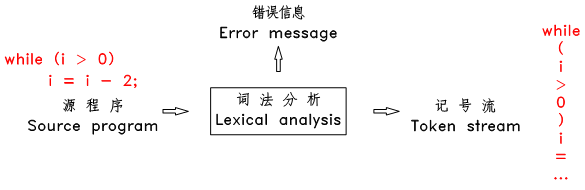
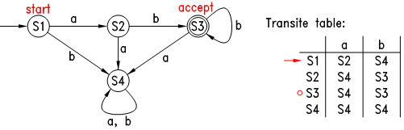

词法分析也称为 分词 ，此阶段编译器从左向右扫描源文件，将其字符流分割成一个个的 词 （ token 、 记号 ，后文中将称为 token ）。所谓 token ，就是源文件中不可再进一步分割的一串字符，类似于英语中单词，或汉语中的词。
图7.1 词法分析示意图
英语中的单词的数量是有限的，程序语言中可用的 token 的类别也是有限的，而且是非常少的。一般来说程序语言中的 token 有：常数（整数、小数、字符、字符串等），操作符（算术操作符、比较操作符、逻辑操作符），分隔符（逗号、分号、括号等），保留字，标识符（变量名、函数名、类名等）等。如：
- 3 和 255 是整数常数 token
- “Fred” 和 “wilma” 是字符串 token
- numTickets 和 queue 是标识符 token
- while 是 T_WHILE token
上述的 3 、 “Fred” 和 while 等称为 token 的 字面值 。有些类别的 token 只有一个字面值，如保留字和分隔符类的 token，其他类别的 token 则有不同字面值，如整数常数 token 。下面是一些典型的 token 及其字面值：
TOKEN-TYPE TOKEN-VALUE
-----------------------------------------------
T_IF if
T_WHILE while
T_ASSIGN =
T_GREATTHAN >
T_GREATEQUAL >=
T_IDENTIFIER name / numTickets / ...
T_INTEGERCONSTANT 100 / 1 / 12 / ....
T_STRINGCONSTANT "This is a string" / "hello" / ...
编译器中的 token 中一般用一个 struct 来表示：
typedef enum {
T_IF, T_WHILE, T_ADD, T_INTCONSTANT, T_STRINGCONSTANT, T_IDENTIFIER, ...
} TokenType;
typedef struct _Token {
TokenType type;
union {
char *stringval;
int *intval;
double *doubleval;
} value;
} TokenRecord;
词法分析器每扫描到一个完整的 token 后，立即 新建一个 TokenRecord ，将此 token 的类型记录在此结构的 type 域中，将其字面值记录在 value 域中对应的子域内，并将此 TokenRecord 结构传递给下一阶段的语法分析模块使用，然后接着扫描下一个 token 。这样从语法分析模块的角度来看，源程序就变成了一个连续的 token stream 了。
分词扫描的方法有直接扫描法和正则表达式匹配扫描法，下面先介绍直接扫描法。
直接扫描法的思路非常简单，每轮扫描，根据第一个字符判断属于哪种类型的 token ，然后采取不同的策略扫描出一个完整的 token ，再接着进行下一轮扫描。例如 TinyC 中，若仅考虑一些简单的情况，按 token 的第一个字符，可以将所有类别的 token 分为以下 7 大类：
（1）A型单字符运算符
包括：+, -, *, /, %， 这种 token 只有一个字符，若本轮扫描的第一个字符为上述字符，则立即返回此字符所代表的 token ，然后移到下一个字符开始下一轮扫描。
（2）B型单字符运算符和双字符运算符
B型单字符运算符包括： < > = ! ，双字符运算符包括： <=, >=, ==, != 。 若本轮扫描的第一个字符为B型单字符运算符时，先查看下一个字符是否是 “=” ，如果是，则返回这两个字符代表的 token ，如果否，则返回这个字符代表的 token 。例如，如果扫描到 “>” ，则查看下一个字符是否是 “=” ，是则返回 T_GREATEEQUAL ，否则返回 T_GREATTHAN 。
（3）关键词和标识符
关键词和标识符都是以字母或下划线开始、且只有字母、下划线或数字组成。若本轮扫描的第一个字符为字母或下划线时，则一直向后扫描，直到遇到第一个既不是字母、也不是下划线或数字的字符，此时一个完整的词就被扫描出来了，然后，查看这个词是不是为关键字，如果是，则返回关键字代表的 token ，如果不是，则返回 T_IDENTIFIER 以及这个词的字面值。
（4）整数常量
整数常量以数字开始，若本轮扫描的第一个字符为数字，则一直向后扫描，直到遇到第一个非数字字符，然后返回 T_INTEGERCONSTANT 和这个数字。
（5）字符串常量
字符串常量以双引号开始和结束，若本轮扫描的第一个字符为双引号，则一直向后扫描，直到遇到第一个双引号，然后返回 T_STRINGCONSTANT 和这个字符串。
（6）空格
若本轮扫描的第一个字符为为空格，则跳过此字符。
（7）注释
注释仅考虑以 # 开始的情况，若本轮扫描的第一个字符为 #，则直接跳过此行字符流。
以上算法的实现也很简单，scan.py 是用 python 按上述思路实现的一个扫描器，它以自己为源文件进行分词。将此文件下载下来，放在终端的当前目录，再在终端输入：
$ python scan.py
将输出：
TOKEN TYPE TOKEN VALUE
--------------------------------------------------
T_identifier single_char_operators_typeA
T_= =
T_{ {
T_string ";"
T_, ,
T_string ","
...
该文件中的核心代码是 scan 函数，它对一行字符串进行分词，代码如下，读者可以粗略的看看这个函数的代码，基本就是按以上所描述的算法实现的。
def scan(s):
n, i = len(s), 0
while i < n:
ch, i = s[i], i + 1
if isWhiteSpace(ch):
continue
if ch == "#":
return
if ch in single_char_operators_typeA:
yield Token(ch)
elif ch in single_char_operators_typeB:
if i < n and s[i] == "=":
yield Token(ch + "=")
else:
yield Token(ch)
elif isLetter(ch) or ch == "_":
begin = i - 1
while i < n and (isLetter(s[i]) or isDigit(s[i]) or s[i] == "_"):
i += 1
word = s[begin:i]
if word in reservedWords:
yield Token(word)
else:
yield Token("T_identifier", word)
elif isDigit(ch):
begin = i - 1
aDot = False
while i < n:
if s[i] == ".":
if aDot:
raise Exception("Too many dot in a number!\n\tline:"+line)
aDot = True
elif not isDigit(s[i]):
break
i += 1
yield Token("T_double" if aDot else "T_integer", s[begin:i])
elif ord(ch) == 34: # 34 means '"'
begin = i
while i < n and ord(s[i]) != 34:
i += 1
if i == n:
raise Exception("Non-terminated string quote!\n\tline:"+line)
yield Token("T_string", chr(34) + s[begin:i] + chr(34))
i += 1
else:
raise Exception("Unknown symbol!\n\tline:"+line+"\n\tchar:"+ch)
可以看出直接扫描法思路简单，代码量非常少，scan.py 不过 100 代码。但缺点是速度慢，对标识符类型的 token 需要进行至少 2 次扫描，且需进行字符串查找和比较。而且不容易扩展，只适用于语法简单的语言。目前一般的编译器都是采用基于正则表达式匹配的分词扫描法，以下介绍此方法。
在进一步介绍正则表达式之前，让我们先思考下语言的本质是什么、编译的本质又是什么？编译的输入是程序、输出也是程序，那么程序的本质又是什么？
程序本质上就是一个字符串，而语言呢，可以看成一个由合法程序组成的集合，也就是一个字符串集合。编译是干吗的？一个是判断输入程序是不是源语言中的合法程序，也就是判断一个元素是否属于一个集合，另一个是将源语言中的合法程序转换成目标语言中的合法程序，且两个程序的含义是一致的，也就是将一个集合中的元素映射到另一个集合中的元素上去。
编译原理和语言学的理论基础是集合论，下面用集合论的概念来对语言、程序做一个正式的定义。这些定义对于我们后面的语法分析是至关重要的。
首先介绍几个基本概念：
字母表 Σ 和符号 ： 字母表就是一个有限元素的集合，用 Σ 表示，里面的每个元素称为符号。如： Σ = {0, 1}, Σ = {a, b, ..., z} 。从逻辑的角度来说，只要是一个有限的集合，都可以称为字母表，而不用管里面的元素具体是什么，实际使用时一般用字符的集合。
** Σ 上的句子 sentence/string** ： Σ 上的句子就是一串符号，里面每个符号都属于 Σ ，句子用 s 表示，即 s = θ1 θ2 ... θn , θi ∈ Σ , n ∈ N （此处 N 特指自然数集合），如 abcd, “hello world”, 一个 C 源程序 等都是一个句子。
空句子 ε ： 空句子就是没有任何符号的句子，用 ε 表示，空句子也是一个句子，就是上面那个式子中 n = 0 的情况。
下面我们来给语言（language）和编译来下一个正式的定义：
语言 L （language） ： 一个语言就是一个句子集合（a set of sentences），用 L 表示，任何由句子组成的集合都可以被称为一个语言，如：英语就是所有符合英语语法的句子组成的集合，法语就是所有符合法语语法的句子组成的集合， C 语言就是所有能编译成功的 C 源文件的集合，只含一个句子 a 的集合 {a} 是一个语言，集合 {a, ab, abb, ...} 也是一个语言， ...... 。
编译 ：编译就是给定两个句子集合 Ls （源语言）和 Lo （目标语言）以及一个句子 ss ，判断 ss 是否属于 Ls ，以及在 Lo 中寻找出一个句子 so ，其意义和 ss 相同。
下面介绍一种最特别的语言：
- 形式语言 Σ* （Formal language）：基于 Σ 的形式语言是指 Σ 上的所有句子的集合，用 Σ* 表示，即： Σ* = { s | s = θ1 θ2 ... θn , θi ∈ Σ, n ∈ N }。
可以看出所有语言都是形式语言 Σ* 的一个子集。注意：这里说的是形式语言的 子集 ，并 不是 说所有语言都 是 形式语言。
下面来介绍我们本章的重点：正则语言。
所谓 正则语言（Regular language），是指这样的句子集合：
（1） 只有一个空句子的集合是一个正则语言，只有一个单符号句子的集合也是一个正则语言。如以下每个集合都是一个正则语言：
{ε}, {a}, {b}, ..., {z}注意上面每个集合中都只有一个句子，每个句子要么是空句子、要么只有一个字符。另外注意 {ε} 不要和空集搞混了，空集中没有任何元素，{ε} 中有一个空句子元素。
（2） 如果句子集合 R1 和 R2 是正则语言，则 R1 和 R2 的并集 R 也是一个正则语言，R = R1 ∩ R2。
（3） 如果句子集合 R1 和 R2 是正则语言，则 R1 和 R2 的连接集合 R 也是一个正则语言。连接集合 R = { s1 s2 | s1 ∈ R1, s2 ∈ R2 } 。
（4） 如果句子集合 R 是正则语言，则 R 的重复集合 R* 也是一个正则语言，重复集合 R* = { s1 s2 ... sn | si ∈ R , n ∈ N }，此处 n 可以等于 0 ，此时 R* 中只有一个空句子。
一个正则语言就是一个句子集合，那么我们如何表示这个集合？对于集合，我们可以用枚举法来表示，也可以用特性法来表示。对于正则语言，我们用正则表达式来表示。每个正则语言（句子集合），都可以用一个正则表达式来代表它，同样，每个正则表达式，都有一个对应的句子集合。
正则表达式就是按正则语言的构造方式来表示的：
（1） 只有一个空句子的集合的正则表达式为 ε ，只有一个单符号句子的集合 {θ} 的正则表达式为 θ 。
（2） 如果正则语言 R1 和 R2 的正则表达式为 r1 和 r2 ，那么正则表达式 r1|r2 表示 R1 和 R2 的并集。
（3） 如果正则语言 R1 和 R2 的正则表达式为 r1 和 r2 ，那么正则表达式 r1 r2 表示 R1 和 R2 的连接集合。
（4） 如果正则语言 R 的正则表达式为 r ， 那么正则表达式 r* 表示 R 的重复集合 R* 。
（5） 正则表达式 (r) 和 r 是等价的。
例如：
正则表达式 a 表示集合 {a}， b 表示集合 {b} ， a|b 表示集合 {a, b} ， ab* 表示集合 {a, ab, abb, abbb, ... } 。
以上例子中均用 粗体字 来表示正则表达式。
以上构造规则虽然简单，却可以搭建出复杂、表达功能强大的正则表达式，用简短的正则表达式可以表示出一个很大的句子集合。在这里再次强调一下：一个正则表达式就是一个句子集合，简单的正则表达式可以构造出复杂的正则表达式，也就是说简单的句子集合可以构造出复杂的句子集合。
一个句子如果属于一个正则表达式所代表的句子集合，则称这个句子和此正则表达式匹配。
在实际运用中，正则表达式一般都采用一些简写的方式，最常见的有：
（1）特殊字符
以下 11 个字符：* [ ] ^ $ . | ? * + ( ) 被保留作特殊用途，如果想使用这些字符的字面值，需要在前面加反斜杠 “\” 转义。另外，一些不便书写的字符可以通过在前面加 “\” 转义，如 \n 和 \t 分别表示换行符和制表符。
（2）字符集
如： [abferx] ，用方括号括起来的字符，表示匹配这些字符中的其中一个，相当于 (a|b|f|e|r|x) 。方括号内的特殊字符不需要转义（ [ ] - ^ 除外），如 [af({] 表示 匹配 “a”, “f”, “{”, “(” 中的其中一个。方扩号内可以使用 “-“ 来定义一个范围，且可以定义多个范围，如 [0-9] 表示匹配单个数字， [a-zA-Z] 表示匹配单个字母。
（3）取反字符集
如： [^abc] ，在方括号内的第一个字符为 ^ ，表示这是一个取反字符集，表示匹配一个不在方括号内部的字符。
（4）*、?和+
* 表示匹配前面的字符（或者由括号括起来的表达式、方括号括起来的字符集）0次或多次；
? 表示匹配前面的字符（或者由括号括起来的表达式、方括号括起来的字符集）0次或1次；
+ 表示匹配前面的字符（或者由括号括起来的表达式、方括号括起来的字符集）1次或多次。
（5）”.” 通配符
. 表示匹配除换行符外的任意字符一次。
正则表达式可以用来表示源程序中的 token ，如：
- 整数 ： [0-9]+
- 小数 ： [0-9]+\.[0-9]*
- 字符串 ： \”[^\”]*\”
- 标识符 ： [_a-zA-Z][_a-zA-Z0-9]*
- 关键字 if ： if
下面再简单介绍一下正则表达式的实现原理：有限状态自动机。
有限状态自动机（finate automaton）是用来判断字符串（句子）是否和正则表达式匹配的假想机器，它有一个字母表 Σ 、一个状态集合 S ，一个转换函数 T ，当它处于某个状态时，若它读入了一个字符（必须是字母表里的字符），则会根据当前状态和读入的字符自动转换到另一个状态，它有一个初始状态，还有一些所谓的接受状态。
它的工作过程是：首先自动机处于初始状态，之后它开始读入字符串，每读入一个字符，它都根据当前状态和读入字符转换到下一状态，直到字符串结束，若此时自动机处于其接受状态，则表示该字符串被此自动机接受。如下图：
图7.2 典型的有限状态自动机
上图中圆圈表示各种状态，各箭头及签头上的字符表示状态的转换表，自动机只有一个初始状态，用一个不含字符的箭头指向此状态，可以认为此为自动机的入口，自动机可以有一个或多个接受状态，用双圆圈表示。上图中的自动机的字母表为 {a, b}，初始状态为 S1 ，当它读入一个 a 后，就转到状态 S2 ，若读入的是 b ，则转到 S4，然后一个接一个字符的转换其状态，若字符结束时自动机处在其接受状态，则表示此字符串被其接受。经过观察可知，此图中的自动机能接受的字符串为 “ab”, “abb”, “abbb”, ... ，也就是说，此自动机与正则表达式 ab+ 是等价的。
简单的有限状态自动机可以通过上一小节的 与、连接和重复 搭建出复杂的自动机。数学家们已经证明了：任何一个正则表达式都有一个等价的有限状态自动机，任何一个有限状态自动机也有一个等价的正则表达式。
可以看出有限状态自动机的判断速度是非常快的，它只要求对字符串扫描一遍就可以了，显然比前面介绍的直接扫描法要快多了。
总而言之，正则表达式的匹配判断可以通过构造有限状态自动机来进行，以上仅介绍了构造有限状态自动机的大体思路：先构造基本的自动机，再根据正则表达式的结构搭建出复杂的自动机。构造有限状态自动机的具体算法十分复杂，本站不再深入介绍了，还是借用前人已经做好的工具吧，下一章中，将介绍如何使用 flex 来进行基于正则匹配的词法分析。
第 7 章完
{kind=link}
{kind=link}